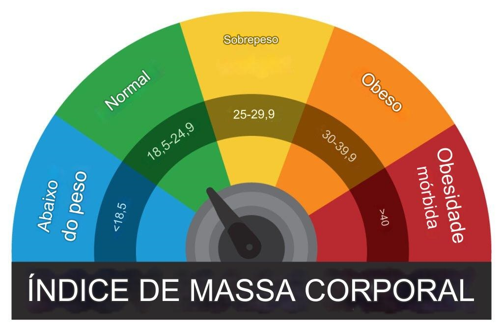

Bem-vindo ao Calculador de IMC!
Dicas de Saúde
Encontre dicas valiosas sobre como manter sua saúde em dia.
- Alimente-se bem com alimentos naturais.
- Pratique exercícios regularmente.
- Mantenha-se hidratado ao longo do dia.
Você sabia que calcular seu IMC pode ajudar a monitorar a sua saúde?
